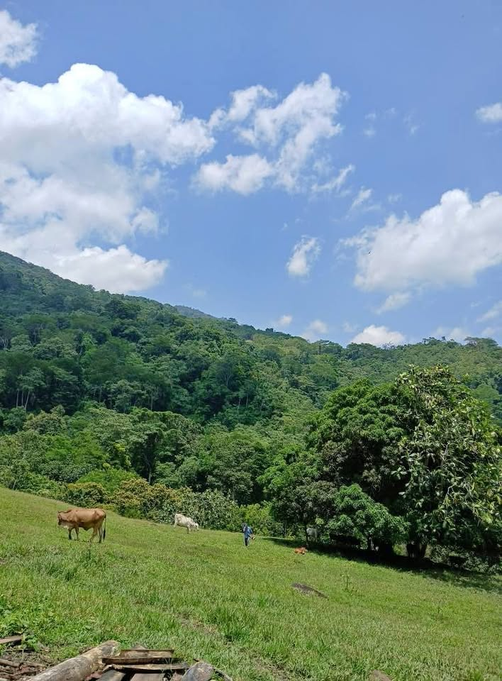

PEN3 18 ha

¡Oportunidad Única! 😊 ¿Buscas un terreno amplio para invertir en el futuro? ¡Esta es tu oportunidad! Terreno de 18 Hectáreas en Venta Ubicado en el caserío La banda de cumbaza, distrito de San Antonio de cumbaza, Tarapoto, San Martin Este terreno de 18 hectáreas es ideal para proyectos ganaderos, residenciales o turísticos. Con todo los documentos en regla y contamos con: - Servicios básicos disponibles (agua, luz y acceso al rio cumbaza) - Área total: 18 hectáreas - Oportunidad para desarrollar un proyecto único y rentable ¡No te pierdas esta oportunidad! 😊 Contacto directo con el propiet